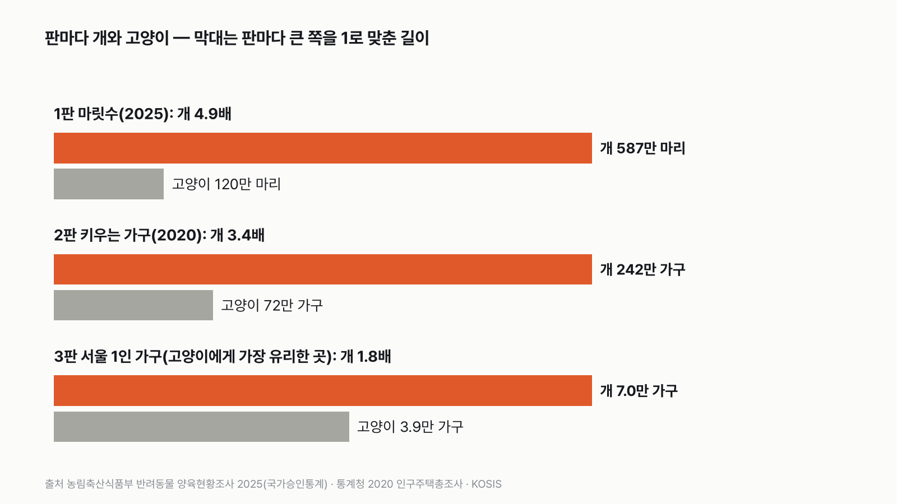
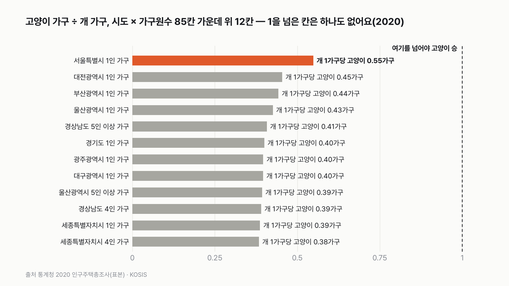
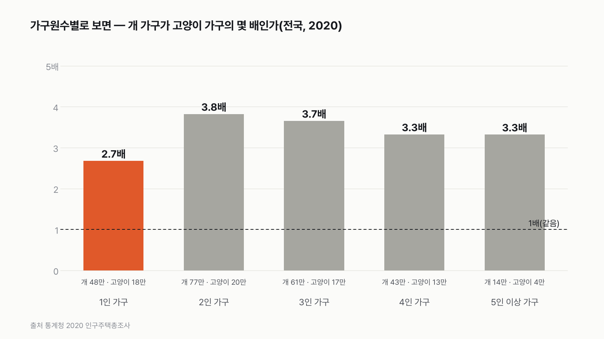
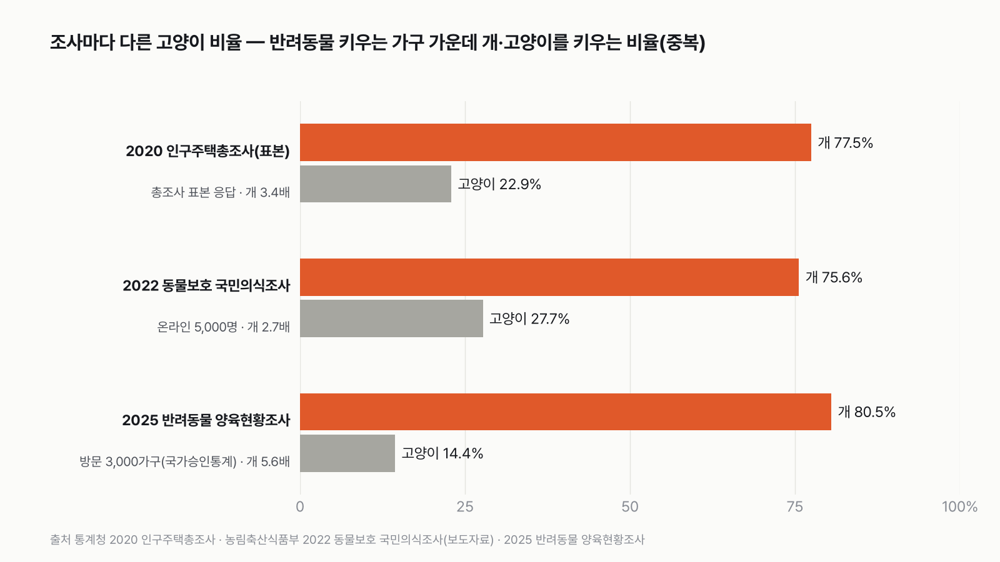

한국에서 키우는 개가 많을까, 고양이가 많을까
결과를 보기 전에 먼저 골라 주세요. 투표하면 독자 예상과 데이터 결과를 나란히 보여 드려요.
- 서울에서 혼자 사는 집에서도 개가 고양이보다 많을까요? 요즘 주변에 고양이 키우는 집이 부쩍 많아 보여요.
- 정부가 올해 처음 국가 공식 통계로 낸 반려동물 조사와, 인구주택총조사의 반려동물 문항으로 겨뤘어요.
- 마릿수, 키우는 가구 수, 고양이에게 가장 유리한 동네까지 세 판이에요. 투표하면 결과가 바로 아래에 열려요.
조건과 규칙
- 집에서 키우는 개와 고양이만 세요. 길고양이나 보호소 동물은 빼요.
- 숫자는 모두 정부 공식 통계에서 가져와요. 조사마다 방법이 달라서, 한 판 안에서는 개와 고양이를 같은 조사의 같은 문항으로만 견줘요.
- 마릿수, 키우는 가구 수, 고양이에게 가장 유리한 곳 세 판으로 겨뤄요.
독자 투표
한국에서 키우는 개가 많을까 고양이가 많을까?
결과 요약
3판 3승 0패 → 최종 개 승
- 한국 집에서 키우는 개는 약 587만 마리, 고양이는 약 120만 마리예요. 개가 4.9배예요.
- 2020년 총조사로 보면 개를 키우는 가구는 고양이를 키우는 가구의 3.4배예요. 고양이에게 가장 유리한 서울 1인 가구에서도 개가 1.8배였어요. 이 자료로는 2020년 뒤의 변화는 알 수 없어요.
- 숫자는 모두 공식 통계에서 왔고, 제가 손댄 건 비율을 가구 수에 곱하는 계산 정도예요. 세 조사 어느 것으로 봐도, 17개 시도 × 가구 크기 5묶음 85칸 어디서도(2020년) 고양이가 앞서는 곳은 없었어요.
그래서? 고양이가 늘었다는 느낌과 달리, 2025년 마릿수로는 아직 개가 다섯 배 가까이 많아요. 다만 혼자 사는 사람 사이에서는 고양이가 개를 가장 바짝 따라붙어요.
독자 예상 vs 데이터 결과
한국에서 키우는 개가 많을까 고양이가 많을까?
데이터로 보면 개. 개 약 587만 마리, 고양이 약 120만 마리로 개가 4.9배예요. 고양이에게 가장 유리한 서울 1인 가구에서도 개가 1.8배예요.


숫자 두 개로 줄이면 이래요. 반려동물을 키우는 집 10곳 가운데 8곳이 개를 키우고, 고양이를 키우는 집은 1곳 반이에요. 대신 고양이 집은 평균 1.27마리, 개 집은 1.11마리를 키워서 한 집에 여러 마리를 키우는 건 고양이 쪽이에요.
| 판 | 개 | 고양이 | 승자 |
|---|---|---|---|
| 1판 마릿수(2025) | 587만 마리 | 120만 마리 | 개(4.9배) |
| 2판 키우는 가구(2020) | 242만 가구 | 72만 가구 | 개(3.4배) |
| 3판 서울 1인 가구(2020) | 7.0만 가구 | 3.9만 가구 | 개(1.8배) |
| 최종 | 3판 3승 0패 → 개 승 |
이 규칙과 자료면 최종 승자는 개예요. 세 판 모두 개가 이겼고, 고양이 쪽으로 가장 기울여 고른 판에서도 1.8배 차이가 났어요. 다만 2판과 3판은 같은 2020년 총조사를 다르게 자른 거라, 서로 따로 선 증거 두 개는 아니에요.
| 구분 | 내용 |
|---|---|
| 잰 값 | 2025년 조사의 키우는 비율·개 고양이 비율·가구당 마릿수, 2020년 총조사의 개·고양이 가구 수, 2025년 일반가구 수 |
| 손댄 값 | 2025년 비율을 2025년 일반가구 수에 곱한 마릿수, 공표하지 않은 칸('-')을 0으로 센 것, 표본 수만 넣고 가중치는 뺀 간단한 오차 범위 |
| 시점 | 1판은 2025년, 2판·3판은 2020년 자료예요. 2020년 뒤의 변화는 2·3판에 들어가지 않아요. |
1판 마릿수: 개 승(4.9배)
2025년 반려동물 양육현황조사는 정부가 올해 처음 국가 공식 통계로 낸 조사예요. 인구주택총조사 표본에서 뽑은 3,000가구를 직접 찾아가 물었어요. 그 결과 우리나라 가구의 29.2%가 반려동물을 키우고, 그 가운데 80.5%가 개, 14.4%가 고양이를 키워요(둘 다 키우면 양쪽에 다 들어가요).
2025년 일반가구는 약 2,250만이에요. 여기에 키우는 비율과 가구당 마릿수를 곱하면 개 약 587만 마리, 고양이 약 120만 마리예요. 조사한 가구 수가 한정돼 있어서 생기는 오차를 넣어도 개는 고양이의 4.0~5.9배 범위 안에 있어요. 무승부 근처에도 가지 않아요.
2판 키우는 가구: 개 승(3.4배)
2020년 인구주택총조사는 처음으로 "반려동물을 키우나요, 어떤 동물인가요"를 물었어요. 응답한 가구가 워낙 많아서 가장 촘촘한 자료예요. 개를 키우는 가구는 242만, 고양이를 키우는 가구는 72만이었어요. 개와 고양이를 함께 키우는 14만 가구는 양쪽에 모두 셌어요.
3판 서울 1인 가구: 개 승(1.8배)
고양이에게 기회를 주려고, 2020년 총조사를 17개 시도 × 가구 크기 5묶음, 85칸으로 쪼갠 뒤 고양이 비율이 가장 높은 칸을 골랐어요. 그 칸이 서울 1인 가구였어요. 여기서 개를 키우는 가구는 7.0만, 고양이는 3.9만이에요. 개 1가구당 고양이 0.55가구로, 고양이가 가장 바짝 붙는 곳이지만 그래도 개가 1.8배예요.
85칸 가운데 고양이가 개를 넘은 칸은 하나도 없었어요. 저는 서울 1인 가구라면 고양이가 이기는 칸 하나는 나올 줄 알았는데, 가장 가까운 곳도 절반을 조금 넘는 수준이라 놀랐어요.


혼자 사는 사람이 고양이를 가장 많이 골라요
전국을 가구원 수로 나눠 보면, 1인 가구에서 개 가구가 고양이 가구의 2.7배로 차이가 가장 작아요. 2인 가구는 3.8배, 3인 가구는 3.7배예요. 고양이 비율이 높은 위 12칸 가운데 8칸이 1인 가구였어요. 왜 그런지는 이 자료로 알 수 없어요. 혼자 사는 사람 사이에서 고양이가 개를 가장 바짝 따라붙는다는 것까지만 말할 수 있어요.


조사마다 고양이 비율이 두 배까지 달라요
반려동물 키우는 가구 가운데 고양이를 키우는 비율은 2020년 총조사 22.9%, 2022년 온라인 조사 27.7%, 2025년 방문 조사 14.4%예요. 조사마다 두 배 가까이 차이가 나요. 농림축산식품부도 2025년 방문 조사와 온라인 조사는 조사한 사람들의 범위(모집단)와 방법이 달라 "비교는 불가능하다"고 밝혔어요. 온라인 조사는 개·고양이 비율이 보도자료로 확인되는 가장 최근 해인 2022년 값을 썼어요. 그래서 고양이가 몇 년 사이 늘었는지 줄었는지는 이 자료로 판정하지 않았어요.
그래도 승자는 바뀌지 않아요. 개를 키우는 비율을 고양이로 나누면 2.7배(온라인), 3.4배(총조사), 5.6배(방문)로, 어떤 조사로 봐도 개가 몇 배 많아요. 결과를 가르는 건 조사 방법이 아니라 차이의 크기뿐이에요.


동물등록 숫자로 견주면 안 되는 이유
반려동물 등록은 개만 의무예요. 2025년 조사에서 개를 키우는 가구의 69.8%가 등록했다고 답했어요. 고양이는 등록 의무가 없어서 등록 숫자로 견주면 고양이가 실제보다 훨씬 적게 잡혀요. 그래서 이 글은 등록 숫자를 판정에 쓰지 않았어요.
무엇이 바뀌면 고양이가 이길까
1판이 뒤집히려면 고양이 키우는 집이 평균 6.2마리를 키워야 해요. 지금은 1.27마리예요. 아니면 반려동물 키우는 집 가운데 고양이를 키우는 집이 지금의 14.4%가 아니라 70%를 넘어야 해요. 3판 서울 1인 가구는 개 1가구당 고양이 0.55가구인데, 이 값이 1을 넘으려면 고양이 가구가 개 가구는 그대로인 채 1.8배로 늘어야 해요. 2020년 뒤 그만큼 늘었는지는 다음 총조사 결과가 나와야 알 수 있어요.
결국 2025년 마릿수 기준으로 한국은 아직 확실한 개의 나라예요. 마릿수로 4.9배, 2020년 키우는 집으로 3.4배, 고양이에게 가장 유리한 서울 1인 가구에서도 1.8배 개가 많아요.
이 숫자는 어디서 왔나요
출처
기준일 2025년 조사와 가구 수는 2026년 11월 9일 KOSIS에서 받았어요. 조건은 2026년 11월 9일, 계산하기 전에 정했어요.
농림축산식품부, 국가승인통계
- 반려동물 양육현황조사 2025KOSIS DT_114063_001원본 보기
양육 비율 29.2%, 개 80.5%·고양이 14.4%, 가구당 1.11·1.27마리, 개 등록 69.8%
통계청 2020 인구주택총조사(표본)
- 반려동물 보유 유형별 가구KOSIS DT_1PH2013
개·고양이 키우는 가구, 시도·가구원수별
통계청 인구주택총조사(등록센서스)
- 거처의 종류별 거처·가구·가구원KOSIS DT_1JU1502
2025년 일반가구 22,495,096
농림축산식품부
- 2025년 반려동물 양육현황 및 동물복지 국민의식조사 결과(보도자료)
조사 방법, 두 조사 비교 불가
- 2022년 동물보호에 대한 국민의식조사 결과(보도자료)
온라인 5,000명, 개 75.6%·고양이 27.7%
어떻게 셌나요
- 마릿수(1판): 2025년 일반가구 22,495,096가구 × 반려동물 키우는 비율 29.2% × 개 키우는 비율 80.5% × 개 키우는 집의 평균 1.11마리 = 약 587만 마리. 고양이는 같은 식에 14.4%와 1.27마리를 넣어 약 120만 마리예요. 일반가구 수는 인구주택총조사 2025년 값이에요. 이 값은 집집마다 찾아가지 않고 주민등록 같은 행정 자료로 센 숫자(등록센서스)예요.
- 오차 범위(1판): 전국을 다 묻지 않고 일부 가구(표본)만 물었기 때문에 생기는 흔들림이에요. 조사에서 개를 키운다고 답한 가구 693곳, 고양이 126곳을 넣어, 같은 조사를 여러 번 하면 100번에 95번은 들어올 범위(95% 범위)를 냈어요. 가구당 마릿수의 흔들림과 가중치는 넣지 않은 간단한 계산이에요. 공표 비율로 계산하면 867가구 × 80.5% = 698, × 14.4% = 125가구라 표본 수(693, 126)와 조금 다른데, 공표 비율에 가중치가 들어가서 생기는 차이로 보여요.
- 키우는 가구(2판·3판): 2020년 인구주택총조사의 '반려동물 보유 유형별 가구'에서 개만, 개+고양이, 개+기타, 개+고양이+기타를 더해 개 가구로, 고양이도 같은 방법으로 셌어요.
- 3판의 칸: 17개 시도 × 가구원 수 5묶음(1인, 2인, 3인, 4인, 5인 이상) = 85칸이에요. 고양이 가구 ÷ 개 가구가 가장 큰 칸 하나에서 겨뤘어요.
- 판정: 판마다 큰 쪽이 이겨요. 1.1배 미만이거나, 1판의 95% 범위가 1을 넘나들면 무승부예요.
한계 4가지
이 데이터로 말할 수 없는 것
- 2025년 조사는 3,000가구 표본이라, 고양이를 키운다고 답한 가구가 126곳이에요. 그래서 오차 범위를 넣었고, 그 범위에서도 개가 4배 넘게 많았어요.
- 2판과 3판은 2020년 자료예요. 2025년 인구주택총조사의 반려동물 결과는 아직 KOSIS에 없어요.
- 조사 방법이 바뀌어서 최근 5년의 증가 속도는 같은 잣대로 잴 수 없었어요. 개와 고양이가 각각 얼마나 늘었는지는 판정하지 않았어요.
- 길고양이, 보호소 동물, 농장·사업장에서 기르는 개는 들어가지 않아요.
새 글 나오면 받아 보기
피드 리더 앱에 이 사이트 주소를 한 번 넣어 두면, 새 글이 올라올 때 앱에 떠요. 가입이나 메일 주소는 필요 없어요.
받는 법 보기
- 피드 리더 앱을 하나 골라요. 새 글을 모아 보여 주는 앱이에요. 예를 들면 Feedly나 Inoreader가 있어요. 둘 다 무료고 웹·휴대폰에서 써요.
- 앱에서 '구독 추가'(+)를 누르고 아래 주소를 붙여 넣어요.
- 끝이에요. 새 글이 올라오면 앱 목록에 떠요.
https://protofu.github.io/opendata-insight/feed.xmlFeedly를 쓴다면 여기를 눌러 바로 추가할 수도 있어요.